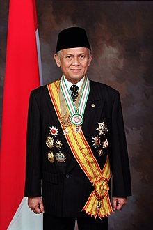

Basic Card
Card Tittle
Pada dasarnya setiap orang pasti ingin memiliki tubuh yang sehat, namun seiring dengan berkembangnya zaman dan kesibukan, terkadang kita mejadi lupa menjalani pola hidup sehat guna menjaga kesehatan. Hasilnya,
kita menjadi terjangkit berbagai macam penyakit dan tidak jarang penyakit tersebut adalah penyakit serius.
Jika kita sudah terkena penyakit,
maka akan ada banyak hal yang merepotkan.
Kita harus mengeluarkan budget untuk pergi ke dokter dan membeli obat,
aktifitas kita menjadi tertunda,
dan kita akan merepotkan orang lain karena kita pasti membutuhkan bantuan sehingga mereka harus merawat kita.
Ini hanya sebagian hal dari banyaknya kerepotan yang terjadi saat kita sakit.
Untuk menghindari hal tersebut, hal yang paling mudah kita lakukan adalah dengan menjalani pola hidup sehat.
Card Title
Pola hidup sehat adalah upaya seseorang untuk menjaga tubuhnya agar tetap sehat. Pola hidup sehat dapat dilakukan dengan cara mengonsumsi makanan bergizi, olahraga secara rutin, dan istirahat yang cukup.
Kebanyakan dari kita menganggap bahwa pola hidup sehat adalah pola hidup yang sulit untuk dijalani. Namun sebenarnya, ada banyak cara yang mudah dilakukan untuk menjaga diri kita tetap sehat.
Di bawah ini ada beberapa tips pola hidup sehat yang mudah dilakukan dan pastinya akan membantu kamu untuk menjadi lebih sehat.
Image Card

Soeharto
Soeharto adalah presiden RI yang ke 2

BJ Habibie
BJ Habibie adalah presiden RI yang ke 3

KH. Abdurrahman Wahid
Gusdur adalah presiden RI yang ke 4